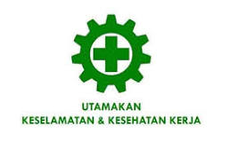

Apa itu k3 sebenarnya dan fungsinya
 K3 berperan untuk menjamin setiap tenaga kerja mendapat perlindungan kesehatan dan keselamatan selama bekerja, menjamin setiap sumber produksi layak dan aman digunakan sehingga mengurangi resiko kerugian yang diakibatkan oleh kecelakaan kerja. Konsep K3 dirancang untuk memberikan jaminan agar aktivitas kerja di perusahaan bisa berjalan dengan lancar. Dalam pelaksanaannya, K3 memiliki banyak fungsi, baik bagi perusahaan maupun karyawan Konsep K3 dirancang untuk memberikan jaminan agar aktivitas kerja di perusahaan bisa berjalan dengan lancar. Dalam pelaksanaannya, K3 memiliki banyak fungsi, baik bagi perusahaan maupun karyawan, yaitu:
- Identifikasi dan Penilaian Risiko.
- Referensi Perencanaan dan Organisasi.
- Pemantauan Keselamatan dan Kesehatan.
- Saran Pendidikan dan Pelatihan.
- Panduan Pengendalian Bahaya.
- Evaluasi Efektivitas.
- Manajemen Pertolongan Pertama dan Tindakan Darurat.